Este trabalho apresenta a limpeza, o tratamento e a visualização de onze anos (2014 a 2024) de despesas empenhadas, liquidadas e pagas pela Prefeitura Municipal de Teixeira (PB), a partir de dados públicos exportados do sistema contábil do município. O objetivo é duplo: (i) demonstrar boas práticas de tratamento de dados tabulares mal formados e de visualização, incluindo formas de representação, cor e composição; e (ii) levantar indícios estatísticos de padrões atípicos no gasto público que possam orientar auditorias mais aprofundadas. Nenhum achado aqui apresentado constitui prova de irregularidade; são sinais que, cruzados com os processos administrativos originais, podem justificar investigação adicional.
A base contém 86.895 registros brutos, um por empenho (DL), com colunas de identificação (fornecedor, CPF/CNPJ mascarado, histórico), classificação orçamentária (função, subfunção, elemento, fonte de recurso) e os valores fixado, empenhado, liquidado, pago, anulado e saldo, além das datas de empenho, pagamento e liquidação.
O arquivo bruto apresentava dois problemas de qualidade que precisaram ser tratados antes de qualquer análise:
Em seguida, datas foram convertidas para o tipo datetime e valores monetários do formato brasileiro (1.234,56) para ponto flutuante. Campos de classificação no formato "código seguido de descrição" (função, elemento, categoria econômica) foram desmembrados e tiveram a caixa do texto normalizada, já que o sistema alterna entre DESPESAS CORRENTES e Despesas Correntes como se fossem categorias distintas.
| Indicador | Valor |
|---|---|
| Período coberto | 2014 a 2024 |
| Nº de empenhos | 86.739 |
| Total empenhado | R$ 460,2 milhões |
| Total pago | R$ 429,0 milhões |
| Execução geral (pago/empenhado) | 93,2% |
| Fornecedores/beneficiários únicos | 7.568 |
| Ticket médio por empenho | R$ 5.309,22 |
| Empenhos sem licitação | 82,5% |
A Figura 1 mostra os três estágios da despesa (empenhado, liquidado, pago) por ano, na mesma escala. O gasto empenhado saltou de R$ 25,5 milhões em 2014 para R$ 77,3 milhões em 2024 (ano ainda parcial, com dados até 22/11), um crescimento de quase 3× em onze anos, com aceleração visível a partir de 2021. As três curvas caminham coladas ao longo de todo o período, sinal de que a diferença entre "prometido" e "efetivamente pago" é historicamente pequena.
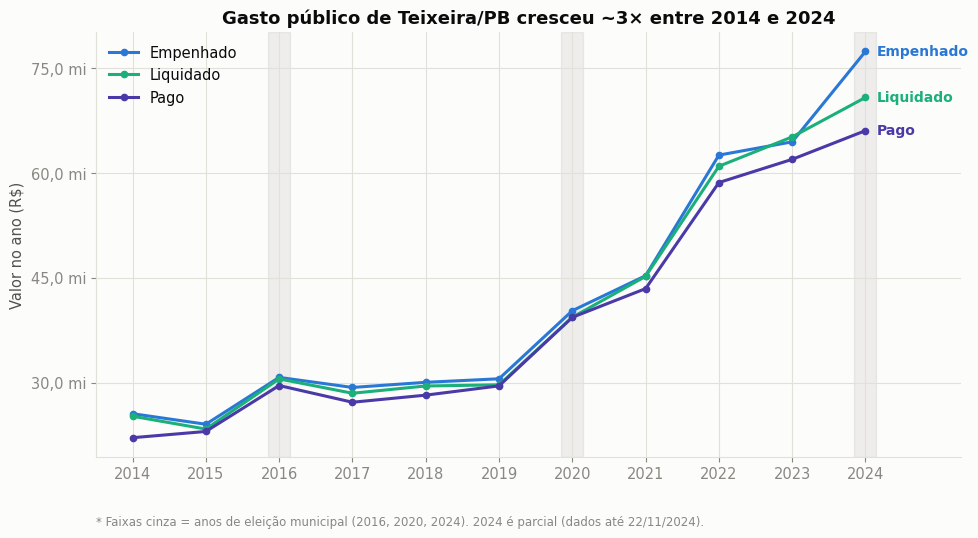
A Figura 2 decompõe o gasto empenhado em uma grade ano×mês. Dezembro concentra sistematicamente o maior volume de empenhos do ano (efeito típico de fechamento de exercício orçamentário), e a intensidade geral da cor cresce visivelmente da esquerda (2014) para a direita (2024), confirmando a tendência de alta observada na Figura 1.
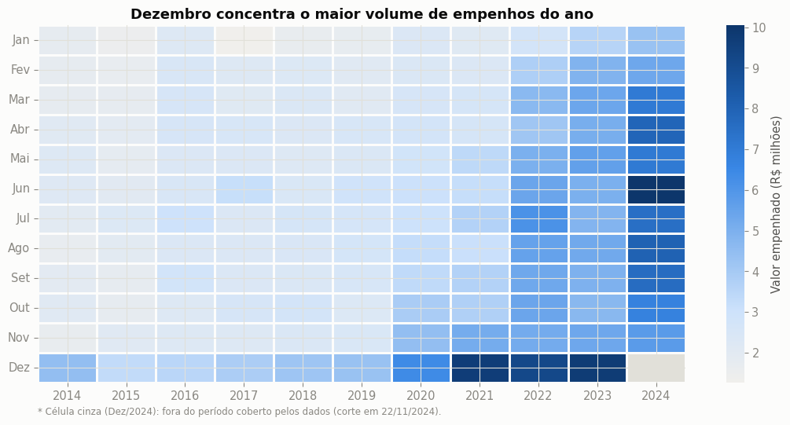
Separando o gasto em Despesas Correntes (folha, custeio) e Despesas de Capital (obras, equipamentos), a Figura 3 mostra que a fatia de capital tende a subir nos anos de eleição municipal: em média 12,8% do valor empenhado em 2016/2020/2024, contra 7,8% nos demais anos, consistente com a hipótese de "obras de vitrine" em ano eleitoral, embora 2024 tenha sido o ano eleitoral com menor pico dos três.
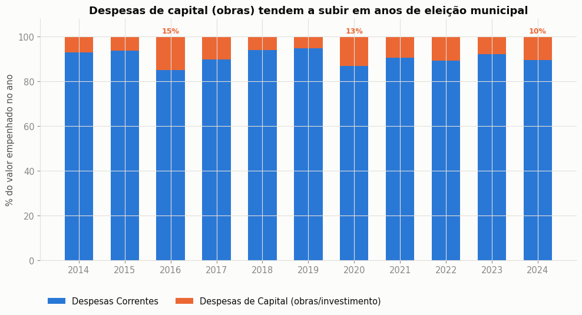
A Figura 4 lista as 12 funções de governo com maior valor empenhado no período (excluídas ~237 linhas com resíduo de corrupção no campo de função, não recuperável pelo reparo da Seção 1). Educação, Saúde e Administração somam 75% de todo o gasto por valor.
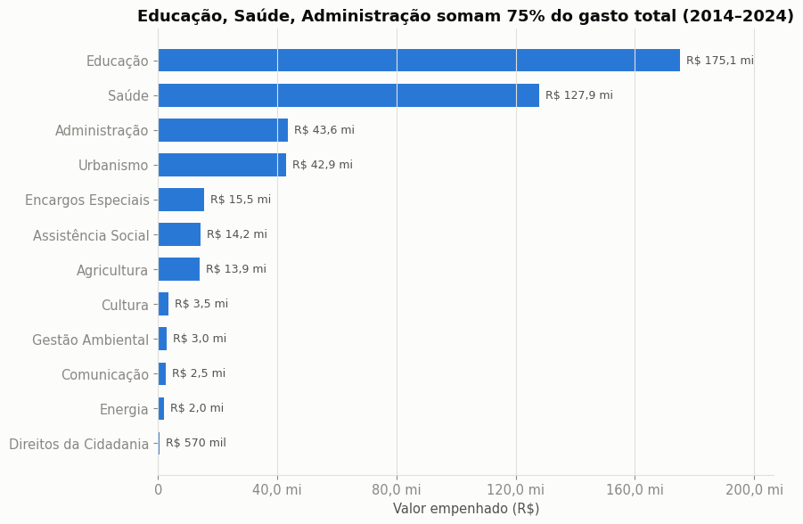
No nível mais granular do plano de contas (Figura 5), a folha de pessoal (vencimentos, contratações temporárias e encargos patronais, destacados em azul) responde sozinha por mais da metade do orçamento, à frente de compras e serviços de terceiros.
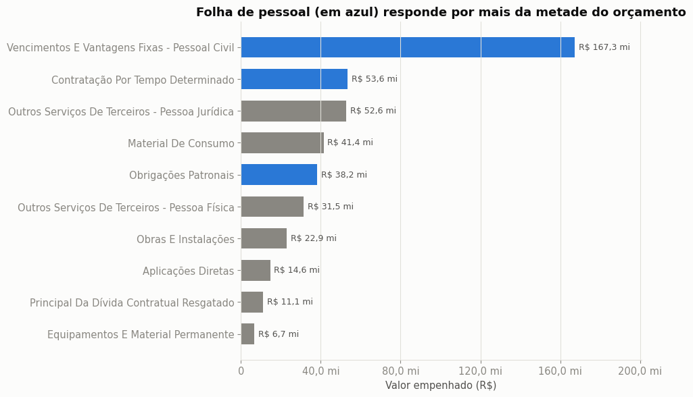
| Função | Valor (R$ mi) |
|---|---|
| Educação | 175,1 |
| Saúde | 127,9 |
| Administração | 43,6 |
Ao rankear os maiores recebedores de pagamentos, a própria "Prefeitura Municipal de Teixeira", o INSS e a Receita Federal aparecem no topo (Figura 6, painel esquerdo), mas representam transferências internas e retenções estatutárias, não fornecedores de mercado. Isolando apenas fornecedores externos (painel direito), o maior recebedor é um posto de combustíveis, seguido pela concessionária de energia e por empresas de construção civil.
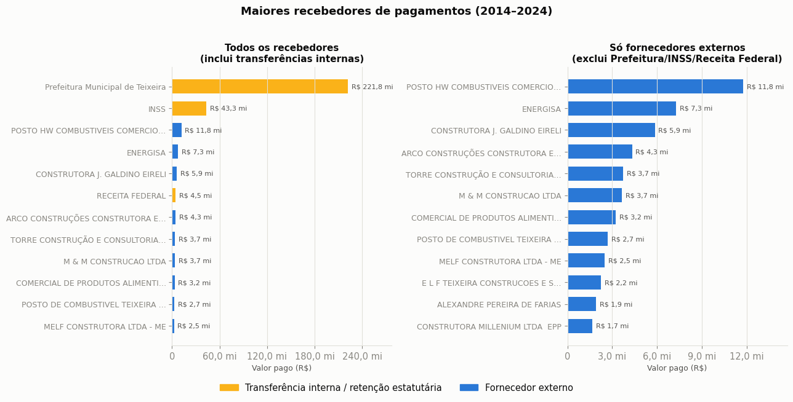
A Figura 7 (curva de Pareto/Lorenz) mostra o quão concentrado é o gasto entre os 7.565 fornecedores externos identificados: apenas 1% deles concentra 57% de todo o valor pago, e 10% concentram 86%. Alta concentração de fornecedores não é, isoladamente, evidência de irregularidade: é esperada em qualquer economia com poucos grandes contratos (obras, combustível, energia), mas é o tipo de padrão que auditorias de gasto público monitoram de perto.
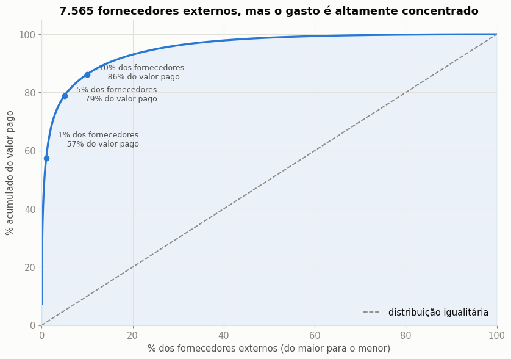
A execução orçamentária (% do empenhado que efetivamente foi pago) ficou entre 85% e 98% em todos os anos do período (Figura 8), sem sinal de deterioração: os valores mais baixos (2014 e 2024) correspondem ao primeiro ano da série e a um ano ainda em curso, respectivamente.
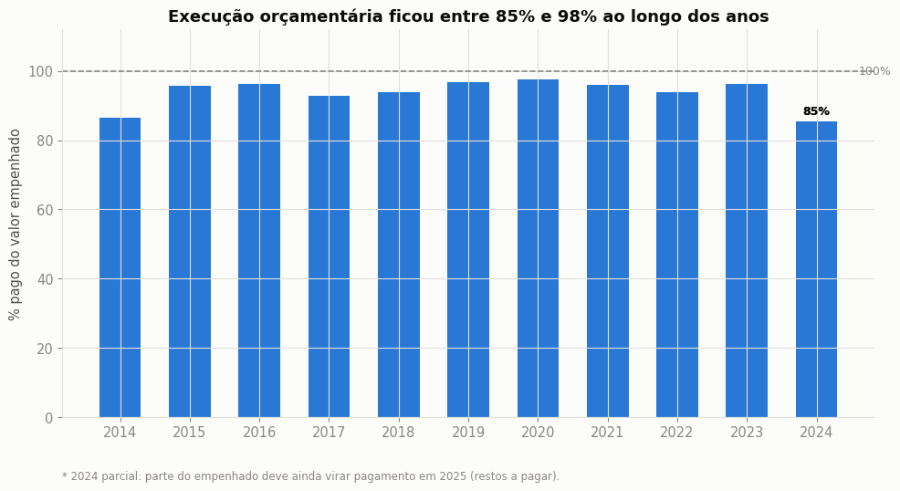
A distribuição dos valores por empenho (Figura 9, escala logarítmica) é fortemente assimétrica: metade dos empenhos vale menos de R$ 998 (reflexo dos milhares de auxílios sociais de baixo valor), enquanto uma cauda longa de contratos de obras e serviços chega a mais de R$ 900 mil.
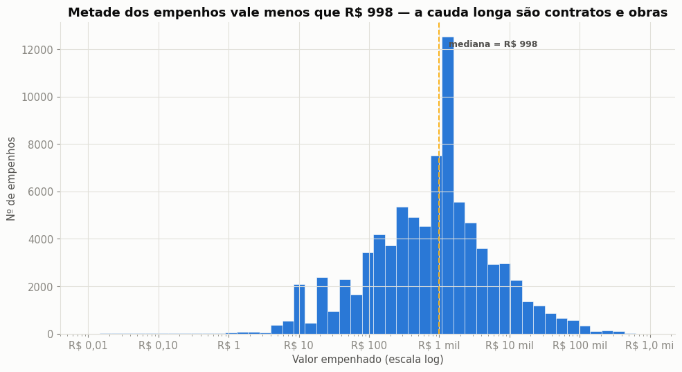
Esta seção aplica três testes estatísticos usados em auditoria e perícia contábil. Nenhum deles, isoladamente, comprova irregularidade: todos podem ter explicações legítimas, discutidas junto com cada achado.
Em conjuntos de números "naturais" que cobrem várias ordens de grandeza, o primeiro dígito significativo segue uma distribuição previsível (Benford, 1938): o dígito 1 aparece em ~30% dos casos, caindo até ~4,6% para o dígito 9. Fraudes e estimativas fabricadas "à mão" tendem a distribuir os dígitos de forma mais uniforme do que essa curva, motivo pelo qual grandes desvios são usados como sinal de alerta em auditoria (Nigrini, 2012). Na Figura 10, o dígito 1 aparece em 37% dos empenhos de Teixeira, acima do esperado, mas a explicação mais provável não é fraude: milhares de auxílios sociais de valor fixo e baixo (R$ 100, R$ 120, R$ 150...) começam todos em "1", inflando esse dígito mecanicamente.
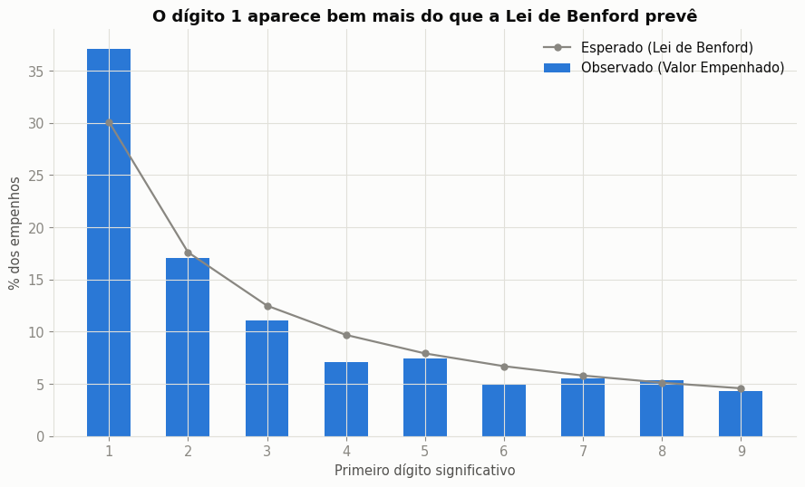
82,5% dos empenhos do período não passaram por processo licitatório (esperado, já que grande parte do orçamento é folha de pagamento, benefícios e tributos, que não exigem licitação). O que importa é a tendência: a Figura 11 mostra que essa fatia oscilou entre 68% e 81% de 2014 a 2023, e recuou para 59% em 2024, o menor valor da série.
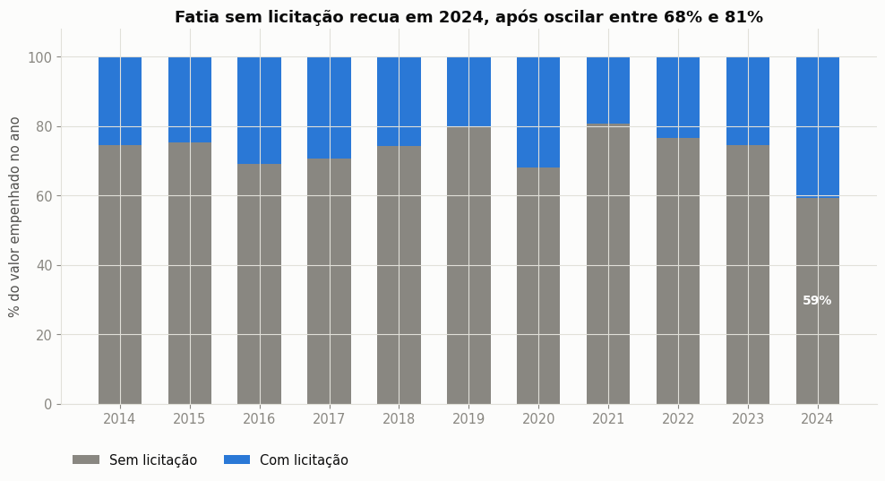
Valores exatamente redondos (múltiplos de R$ 100) são mais compatíveis com estimativas do que com medições reais. A proporção ficou estável entre 22% e 33% ao longo da série, exceto em 2021, quando saltou para 42%, quase o dobro do padrão histórico (Figura 12): um desvio isolado, sem repetição nos anos vizinhos, que não tem explicação óbvia nos demais dados e merece checagem pontual.
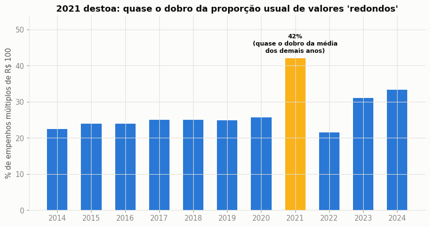
Complementarmente, cruzamos "mesmo fornecedor + mesmo dia + múltiplos empenhos sem licitação" em categorias de compra/serviço (excluindo folha de pagamento e transferências internas): o teste clássico para identificar possível fracionamento de despesa (dividir uma compra grande em várias pequenas para evitar licitação). A maior parte dos casos encontrados envolve concessionária de energia, com contas separadas por unidade consumidora (um padrão legítimo), mas alguns envolvendo construtoras e fornecedores de material em datas muito próximas merecem checagem do processo administrativo correspondente.
O tratamento cuidadoso de um arquivo de origem com defeitos de exportação foi condição prévia para qualquer leitura confiável dos dados. Uma vez limpos, os dados de Teixeira/PB mostram um gasto público que quase triplicou em onze anos, fortemente concentrado em folha de pessoal, Educação e Saúde, com execução orçamentária estável e sem sinais de deterioração. Os testes de auditoria estatística (Benford, ausência de licitação, valores redondos, possível fracionamento) não comprovam irregularidade, mas apontam pontos concretos (em especial o pico de valores redondos em 2021 e a concentração de pagamentos a poucos fornecedores) que justificam checagem adicional nos processos administrativos originais.
Benford, F. (1938). "The Law of Anomalous Numbers". Em: Proceedings of the American Philosophical Society 78.4, pp. 551 a 572.
Nigrini, M. J. (2012). Benford's Law: Applications for Forensic Accounting, Auditing, and Fraud Detection. Hoboken: John Wiley & Sons.
Tribunal de Contas do Estado da Paraíba (TCE/PB). Portal da Transparência: Prefeitura Municipal de Teixeira. Dados de despesas empenhadas, liquidadas e pagas, 2014 a 2024.
Universidade Federal da Paraíba, Departamento de Ciência da Computação. Introdução à Visualização de Dados (GDCOC0096), material da disciplina, Prof. Gustavo Oliveira. Disponível em: cdia.ci.ufpb.br.